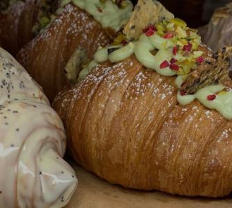

About us
croisenna.co is a small online bakery making laminated croissants the slow way: by hand, with cultured butter, and never in a rush.

Our story
We started with one idea: a croissant should shatter when you bite it and be soft and honeyed inside. Every batch is made in small numbers so each pastry gets the attention it deserves.
We sell only online, so every order is packed fresh and handled personally by Hazel and the team.
Our craft
Day one: mix and rest
Dough is mixed, chilled and left to ferment overnight for flavor.
Day two: fold and shape
Butter is folded in by hand, rolled, cut and proofed until it wobbles.
Day three: bake
Trays go in before dawn, so every order leaves the oven fresh.
What we care about
Real butter
Cultured butter in every fold, nothing substituted.
Small batches
Limited trays so everything stays fresh.
Personal service
Order by message and talk to a real person.